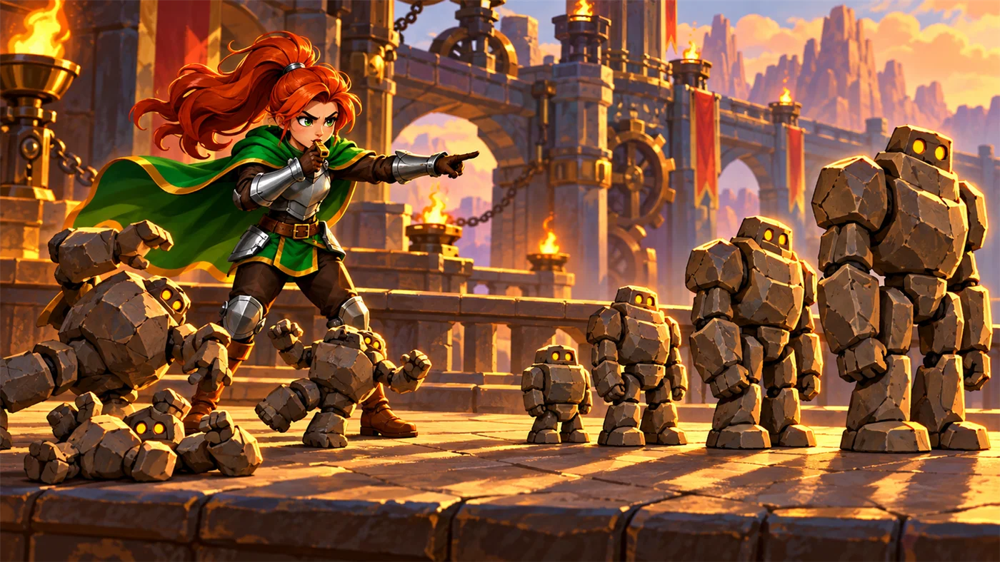

故事：城门前集合了一批新兵，还没受过训练。
教官皱着眉：个头参差不齐，怎么排队？——他们的 health 正好和身高成正比。
戈登说：从最矮的开始挑，一个一个挑出来排到左边去。
扣哒考级 · GESP PYTHON 四级 · 第 7 单元 | 齿轮高台 GEARWATCH TERRACE
队列整编台 排序算法与复杂度
Sorting Algorithms & Complexity

戈登
齿轮工程师 · 你的向导
整编台上堆着一大筐零件，高矮不一、乱七八糟。工头皱着眉：这样怎么装配？
先按尺寸排好队。
你问怎么排。他随手拿起一个：最简单的一招——每一轮都挑出最小的，放到最前面。
戈登在旁边补充：还有一招是挨个比较，谁大谁往后挪。两种都行，看你喜欢。
你问怎么排。他随手拿起一个：最简单的一招——每一轮都挑出最小的，放到最前面。
戈登在旁边补充：还有一招是挨个比较，谁大谁往后挪。两种都行，看你喜欢。
戈登 · 齿轮工程师
排序是算法里的"基本功"，也是四级最爱考的内容之一。它看起来复杂，其实只需要搞懂"比较"和"交换"两个动作，
剩下的就是决定"谁跟谁比、比完之后干什么"。

assets/illustrations/py-L4-07-01_queue_platform.webp
【配图位】整编台上排列着高低不一的金属零件，一名工程师正在用卡尺两两比较；台边的指示牌画出"挑最小""相邻比较"两条流程路径。
0 单元导语与目标
Unit Overview
0.1 学习目标
1学完这个单元，你将能……
- 说清排序的作用和常见场景
- 用文字描述选择排序的执行过程
- 写出选择排序与冒泡排序的代码
- 正确交换列表中的两个元素
- 估算一个排序算法要比较多少次
- 读懂排序代码并预测每一轮的结果
2对标 GESP 考纲（Python 四级）
- 掌握冒泡排序、选择排序的基本思想与实现
- 掌握列表元素的交换方法，理解排序过程中的数组变化
- 了解算法效率的初步概念，能比较排序算法的比较次数
- 考核目标：能读懂排序代码并写出关键步骤，能分析执行过程
0.2 考纲对照
| 本单元小节 | 对应考纲条目 | 真题常考形式 |
|---|---|---|
| 1 为什么要排序 | 排序的作用 | 排好序之后能带来什么方便 |
| 2 选择排序 | 选择排序的过程 | 每一轮做了什么；第一轮结束后的结果 |
| 3 冒泡排序 | 冒泡排序的过程 | 每一轮把哪个元素"送"到了末尾 |
| 4 交换两个元素 | 元素的交换 | Python 里交换的写法 |
| 5 比较次数与复杂度 | 算法效率的估算 | n 个数排序大概要比较多少次 |
1 为什么要排序
Why Sorting
1.1 为什么要排序
排序的目的不只是"看起来整齐"，它能让后面的操作快很多：
| 场景 | 排好序之后的好处 |
|---|---|
| 找最大值 / 最小值 | 直接看排好后的第一个或最后一个 |
| 查某个数在不在 | 可以折半查找，快非常多（五级会学） |
| 成绩排名 | 按分数排序，名次自然出来 |
| 合并两组数据 | 两组都已排好，合并时只需一次扫描 |
1.2 排序的本质
打个比方：
排序就像给一队高低不齐的人重新排队——谁高谁矮一开始是乱的，排好之后一眼就能看出顺序。
排好之后有什么好处？找最大的只要看最后一个，找最小的只要看第一个，查东西也能快很多。
所以排序不是为了"看起来整齐"，而是为了让后面的活儿更好干。
排好之后有什么好处？找最大的只要看最后一个，找最小的只要看第一个，查东西也能快很多。
所以排序不是为了"看起来整齐"，而是为了让后面的活儿更好干。
排序的本质：
反复做两件事——比较（谁大谁小）和交换（换个位置）。
不同的排序算法，区别只在于"用什么样的顺序去比较、什么时候交换"。
不同的排序算法，区别只在于"用什么样的顺序去比较、什么时候交换"。
2 选择排序
Selection Sort
2.1 选择排序
选择排序的口诀一句话：每一轮从"还没排好的部分"里挑出最小的，换到这一轮的最前面。
图 2（SVG）：选择排序——每轮挑最小的放前面
选择排序完整代码
Python
a = [5, 3, 8, 1]
n = len(a)
for i in range(n - 1): # 一共 n-1 轮
minIndex = i # 先假设"未排序区的第一个"最小
for j in range(i + 1, n): # 在它后面找真正的最小值
if a[j] < a[minIndex]:
minIndex = j
a[i], a[minIndex] = a[minIndex], a[i] # 交换
print(a)OUTPUT [1, 3, 5, 8]
2.2 为什么要先假设再找
为什么要先"假设"再"找"？
因为你要记住最小值在哪儿，而不是最小值是多少。
所以用
所以用
minIndex 存下标，最后才能靠这个下标去交换。
3 冒泡排序
Bubble Sort
3.1 冒泡排序
冒泡排序的口诀：相邻两个比较，前面比后面大就交换——最大的会像气泡一样"冒"到末尾。
图 3（SVG）：冒泡排序——每轮把当前最大的送到末尾
冒泡排序完整代码
Python
a = [5, 3, 8, 1]
n = len(a)
for i in range(n - 1): # 一共 n-1 轮
for j in range(n - 1 - i): # 每轮少比一个（末尾已就位）
if a[j] > a[j + 1]: # 前面比后面大
a[j], a[j + 1] = a[j + 1], a[j] # 交换
print(a)OUTPUT [1, 3, 5, 8]
3.2 两种排序的对比

assets/illustrations/py-L4-07-02_three_sorts.webp
【配图位】高台上并排三条通道，每条通道里都站着一排高矮不一的石头人，起始排列完全相同：第一条通道上画着相邻两只石头人交换位置的弧线箭头；第二条通道上画着一只石头人从队尾走到队首、沿途让位的轨迹；第三条通道上画着最矮的那个被光柱选中并移动到最前面的轨迹；一名英雄站在三条通道前，手里举着哨子。

assets/illustrations/py-L4-07-03_bubble_pass.webp
【配图位】高台上的一排石头人，从左到右两两比较，相邻两只之间画着短促的交换弧线；画面右侧队尾那只最高的石头人头顶浮着一个气泡形状的发光轮廓（表示它正被冒泡送到末尾），身后的石头人都比它矮；一名英雄吹着哨子站在队首指挥。
两种排序的对比：
选择排序——"每轮挑最小的，换到前面"，交换次数少；
冒泡排序——"相邻比较，大的往后挪"，代码更容易写；
两者的比较次数是一样的，都是
冒泡排序——"相邻比较，大的往后挪"，代码更容易写；
两者的比较次数是一样的，都是
n(n-1)/2 次。
4 交换两个元素
Swapping
4.1 交换两个元素
排序离不开交换。Python 有全世界最省事的写法：
交换的三种写法
Python
a = [3, 8]
# 写法一：Python 特有，一行搞定（推荐）
a[0], a[1] = a[1], a[0]
# 写法二：借一个临时变量（其他语言常用）
temp = a[0]
a[0] = a[1]
a[1] = temp
# ✘ 错误写法：直接赋值会把数据冲掉
a[0] = a[1] # 这时 a[0] 已经是 8 了，原来的 3 丢了
a[1] = a[0] # 结果两个都是 8要点
a[i], a[j] = a[j], a[i] 是等号右边先算完再一起赋值，所以不会互相冲掉5 比较次数与复杂度
Comparison Count
5.1 比较次数与复杂度
怎么判断一个排序算法"快不快"？最简单的办法是数一数它比较了多少次。
图 6（SVG）：数据量翻倍，比较次数差不多翻四倍
5.2 什么叫复杂度
什么叫"复杂度"？
比较次数随数据量增长的快慢程度，就叫时间复杂度。
上面这两种排序的增长速度是"平方级"的，记作 O(n²)。
意思是：数据量变成 10 倍，耗时会变成约 100 倍。 更快的排序算法（比如快速排序）要到五级、六级才学。
上面这两种排序的增长速度是"平方级"的，记作 O(n²)。
意思是：数据量变成 10 倍，耗时会变成约 100 倍。 更快的排序算法（比如快速排序）要到五级、六级才学。
6 代码实战
Level Practice
关卡
成形！
进入关卡 →思路：这就是选择排序：每一轮都从"还没排队的人"里挑出最矮的， 放到已经排好的队伍末尾。轮数等于人数，每一轮都要把所有没排的人看一遍—— 所以它简单，但也慢。


assets/stages/py-L4-07-stage1_form_up.webp
【关卡截图位】请把《成形！》的游戏画面截图放到此处（放入 assets/stages/ 目录，文件名为 py-L4-07-stage1_form_up.webp）。
重点示例：每轮挑出最矮的一个
Python
while len(recruits) > 0: # 还有没排队的
shortest = recruits[0] # 先假设第一个最矮
for r in recruits: # 把所有人都比一遍
if r.health < shortest.health:
shortest = r # 找到真正最矮的
hero.command(shortest, "move", {"x": 30 + len(sorted), "y": 40})
sorted.append(shortest) # 排到结果末尾
recruits.remove(shortest) # 从待排队伍里拿走要点 每轮都重新找"最小的那个"；人数 n 时，比较次数大约是 n×n/2——数据一多就慢下来了
和本单元的关系：
选择排序的复杂度是
换成归并排序就是
去扣哒世界闯这一关 →
O(n²)：外层 n 轮，内层每轮最多比 n 次。换成归并排序就是
O(n log n)——人数翻倍，工作量只多一倍多一点。
这正是本单元要算的那笔账。
7 常见陷阱
Common Pitfalls

扣哒鸭 · 调试官
排序代码短，但循环边界特别容易错。四条，条条都能让程序停不下来或者白跑。
1
内层循环写下标越界。冒泡里写
a[j+1] 却没限制 j 的上界。
扣哒鸭：既然要访问
所以内层要写
a[j+1]，j 最大只能是 n-2。所以内层要写
range(n - 1 - i)，不能写 range(n - 1)。正确写法：
for j in range(n - 1 - i):2
选择排序记了"最小值"而不是"最小值的下标"。

扣哒鸭：最后要交换的是位置，所以必须存
只记数值的话，你根本不知道它在哪儿，没法交换。
minIndex。只记数值的话，你根本不知道它在哪儿，没法交换。
正确做法：用
minIndex = j 记下标3
交换时没用临时变量，也没用 Python 的写法。

扣哒鸭：
直接用
a[i] = a[j] 之后再写 a[j] = a[i]，
两个就一样了——原来的值被冲掉了。直接用
a[i], a[j] = a[j], a[i] 最保险。正确写法：
a[i], a[j] = a[j], a[i]4
以为"选择排序更快，因为它交换得少"。

扣哒鸭：交换少是真的，但比较次数和冒泡一模一样，
都是 n(n-1)/2 次。
在考试里判断"谁快"，先看比较次数——那是大头。
在考试里判断"谁快"，先看比较次数——那是大头。
正确认识：两者比较次数同为 n(n-1)/2
8 题目练习
Practice
第 1 题改编自 2026 年 9 月 · Python 四级 第 12 题，其余为原创练习题。
改编自 2026 年 9 月 · Python 四级 · 第 12 题单选题
高台的成绩墙要把学生按"等级、年龄"两级规则排序。执行下面 Python 代码后，输出的结果是（ ）。
1 students = [("Alice", "B", 25), ("Bob", "A", 23), ("Cathy", "A", 22)]
2 sorted_students = sorted(students, key=lambda x: (x[1], x[2]))
3 print([s[0] for s in sorted_students])A.['Cathy', 'Alice', 'Bob'] B.['Bob', 'Cathy', 'Alice']
C.['Alice', 'Bob', 'Cathy'] D.['Cathy', 'Bob', 'Alice']
C.['Alice', 'Bob', 'Cathy'] D.['Cathy', 'Bob', 'Alice']
查看答案与详解
答案：D。
① 先看等级
② 等级相同的 Bob、Cathy 再比年龄
所以顺序是 Cathy(A,22) → Bob(A,23) → Alice(B,25) → 选 D。
要点一：
要点二：元组作排序键，天然就是"多级排序"，不用自己写两轮冒泡；
要点三：
对应小节5 比较次数与复杂度。
key 返回一个元组，排序时就是"先按第 1 个元素比，相同再比第 2 个"：① 先看等级
x[1]：A 排在 B 前面；② 等级相同的 Bob、Cathy 再比年龄
x[2]：22 的 Cathy 排在 23 的 Bob 前面；所以顺序是 Cathy(A,22) → Bob(A,23) → Alice(B,25) → 选 D。
要点一：
sorted() 返回新列表，原来的 students 不变；要点二：元组作排序键，天然就是"多级排序"，不用自己写两轮冒泡；
要点三：
[s[0] for s in …] 负责把姓名抽出来，所以输出的是名字列表。对应小节5 比较次数与复杂度。
原创练习题单选题
对列表
[5, 3, 8, 1] 使用选择排序，
第一轮结束后，列表变为（ ）。
A.[3, 5, 8, 1] B.[1, 3, 8, 5] C.[1, 3, 5, 8] D.[5, 3, 1, 8]
查看答案与详解
答案：B。选择排序第一轮：在全部四个数里找最小的 1，
把它和第一个位置的 5 交换 → [1, 3, 8, 5]。
易错点：A 项是冒泡排序第一轮的结果；D 项是交换错了位置。
对应小节2 选择排序。
易错点：A 项是冒泡排序第一轮的结果；D 项是交换错了位置。
对应小节2 选择排序。
原创练习题单选题
对列表
[5, 3, 8, 1] 使用冒泡排序，
第一轮结束后，列表变为（ ）。
A.[3, 5, 8, 1] B.[3, 5, 1, 8] C.[1, 3, 5, 8] D.[3, 1, 5, 8]
查看答案与详解
答案：B。冒泡第一轮相邻两两比较：
5 与 3 交换 → [3,5,8,1]；5 与 8 不动；8 与 1 交换 → [3,5,1,8]。
最大的 8 冒到了末尾。
对应小节3 冒泡排序。
5 与 3 交换 → [3,5,8,1]；5 与 8 不动；8 与 1 交换 → [3,5,1,8]。
最大的 8 冒到了末尾。
对应小节3 冒泡排序。
原创练习题判断题
在 Python 中，
a[i], a[j] = a[j], a[i] 可以正确交换两个元素。（ ）查看答案与详解
答案：正确（√）。等号右边的两个值会先全部算出来，
再一起赋给左边的两个位置，所以不会互相覆盖。
这也是 Python 相比其他语言最方便的地方之一。
对应小节4 交换两个元素。
这也是 Python 相比其他语言最方便的地方之一。
对应小节4 交换两个元素。
原创练习题单选题
对 n 个数据进行冒泡排序，总共需要比较的次数是（ ）。
A.n B.n-1 C.n(n-1)/2 D.n²
查看答案与详解
答案：C。第一轮比 n-1 次，第二轮比 n-2 次……最后一轮比 1 次，
合计
选择排序的比较次数也是一样的。
对应小节5 比较次数与复杂度。
合计
(n-1) + (n-2) + … + 1 = n(n-1)/2。选择排序的比较次数也是一样的。
对应小节5 比较次数与复杂度。
原创练习题单选题
下列 Python 代码执行后，输出的结果是（ ）。
1 a = [2, 9, 4] 2 n = len(a) 3 for i in range(n - 1): 4 for j in range(n - 1 - i): 5 if a[j] > a[j + 1]: 6 a[j], a[j + 1] = a[j + 1], a[j] 7 print(a)
A.[2, 4, 9] B.[9, 4, 2] C.[2, 9, 4] D.报错
查看答案与详解
答案：A。这是标准的冒泡排序（升序）：
第一轮：2 与 9 不动；9 与 4 交换 → [2,4,9]；
第二轮：2 与 4 不动 → 结果 [2, 4, 9]。
对应小节3 冒泡排序。
第一轮：2 与 9 不动；9 与 4 交换 → [2,4,9]；
第二轮：2 与 4 不动 → 结果 [2, 4, 9]。
对应小节3 冒泡排序。
原创练习题单选题
要在列表中找出最大值，下面哪种做法最简单？（ ）
A.先用选择排序排好，再取最后一个
B.遍历一遍，边看边记录当前最大值
C.用冒泡排序排好，再取最后一个
D.必须用递归
B.遍历一遍，边看边记录当前最大值
C.用冒泡排序排好，再取最后一个
D.必须用递归
查看答案与详解
答案：B。只找最大值的话，遍历一遍就够了，只需要 n-1 次比较；
而排序要 n(n-1)/2 次比较——为了找一个最大值去排序，是典型的"杀鸡用牛刀"。
这也说明：排序是有代价的，别乱用。
对应小节5 比较次数与复杂度。
而排序要 n(n-1)/2 次比较——为了找一个最大值去排序，是典型的"杀鸡用牛刀"。
这也说明：排序是有代价的，别乱用。
对应小节5 比较次数与复杂度。
原创练习题编程题
题目要求：用选择排序把列表
[7, 2, 9, 4, 1]
从小到大排序，并在每一轮结束后输出当前列表，观察排序过程。查看参考答案与要点
a = [7, 2, 9, 4, 1]
n = len(a)
for i in range(n - 1):
minIndex = i
for j in range(i + 1, n):
if a[j] < a[minIndex]:
minIndex = j
a[i], a[minIndex] = a[minIndex], a[i]
print("第", i + 1, "轮：", a)
输出：
第 1 轮：[1, 2, 9, 4, 7]
第 2 轮：[1, 2, 9, 4, 7]
第 3 轮：[1, 2, 4, 9, 7]
第 4 轮：[1, 2, 4, 7, 9]
要点：
① 外层只需 n-1 轮（最后一个元素自然就位）；
② minIndex 每轮开始都要重置为 i；
③ 内层从 i+1 开始——前面已经排好的不用再比；
④ 第 2 轮没变化，是因为 2 本来就已经在正确位置上了。
对应小节2 选择排序。
9 本单元小结
Unit Summary
戈登 · 齿轮工程师
三句话记住排序：一、选择排序：每轮挑最小，换到前面。
二、冒泡排序：相邻比较，大的往后冒。
三、两者比较次数都是 n(n-1)/2，属于平方级。
还有一句私房话：交换用 a[i], a[j] = a[j], a[i]，一辈子不会错。
你在队列整编台收获了什么
- 排序的本质——反复做"比较"和"交换"两件事。
- 选择排序——每轮从未排序区挑出最小值，与未排序区首位交换；共 n-1 轮。
- 冒泡排序——相邻两两比较，大的往后挪；内层范围逐轮缩小（
n-1-i）。 - 交换元素——
a[i], a[j] = a[j], a[i]；不能连续两次直接赋值。 - 比较次数——两种排序都是
n(n-1)/2次，属于 O(n²)。 - 选择排序的细节——必须记录"最小值的下标"（minIndex），否则无法交换。
- 别乱排序——只找最大值时，遍历一遍就够了，不必排序。
下一站：档案库与安全阀
车间最深处的档案库锁着一柜柜的资料。程序算出来的东西，一关机就没了—— 怎么把它们保存下来？出了问题又怎么"兜住"？最后一单元，我们来收尾。
加入扣哒世界，把这条考纲之路走一遍 →